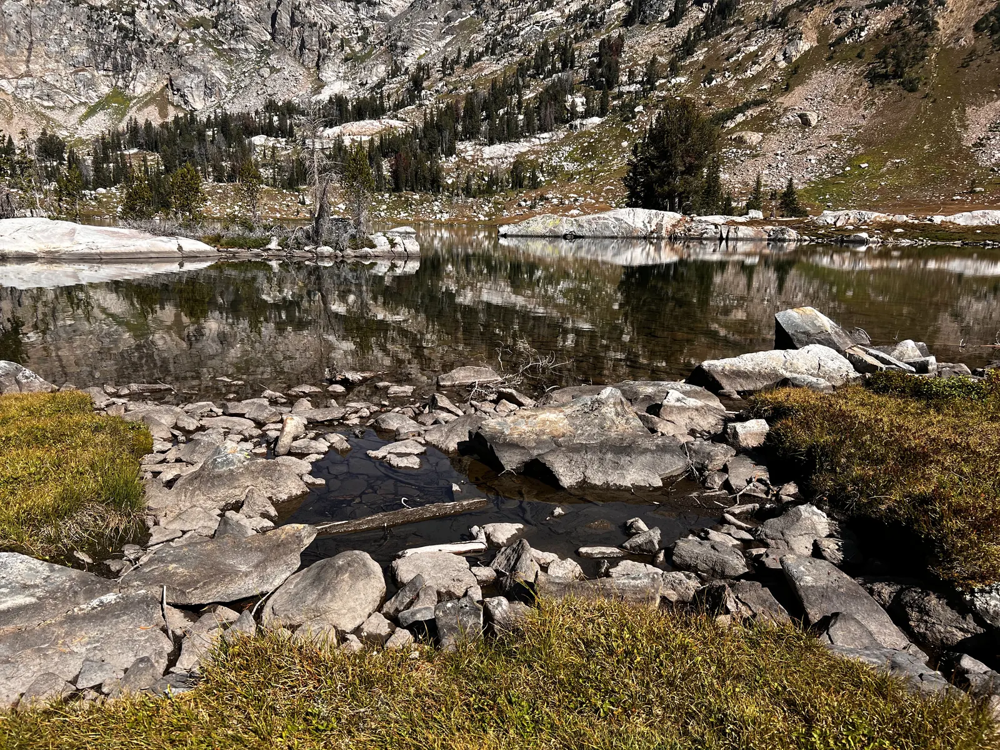
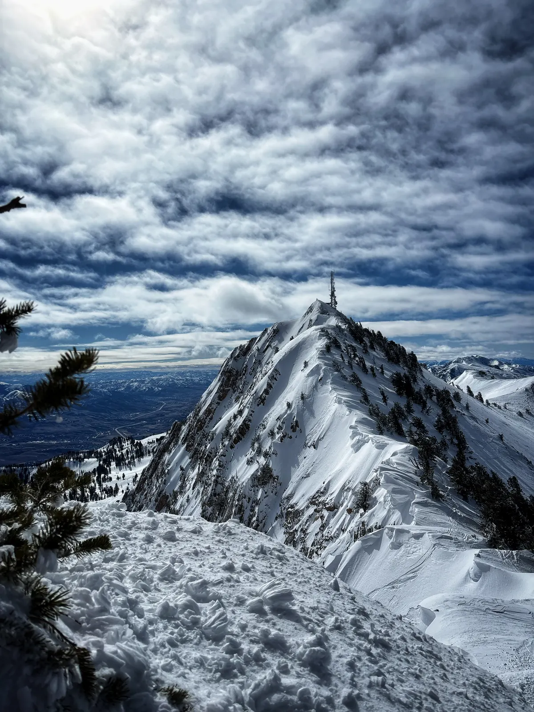
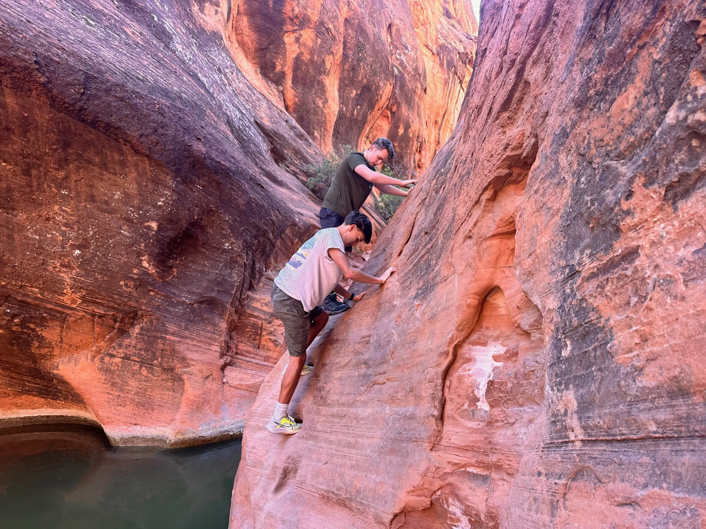
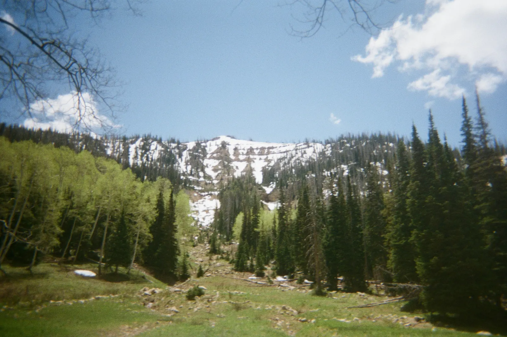

OutdoorsAway from
Away from
the keyboard.
Snowbasin all winter, and bikes, rock and trails the rest of the year.


Freeride skiing
Snowbasin is my home mountain. I compete in freeride with the Snowbasin Ski Team.

Two wheels, more trails.
Mountain biking is one of my main sports through the summer.

Rock & a little route-finding
Finding a way through.
I like climbing whenever I can find something to get on.

Days on foot.
Hiking, long days in the mountains, and the occasional moose or elk along the way.
More photos
I post the rest on Instagram.